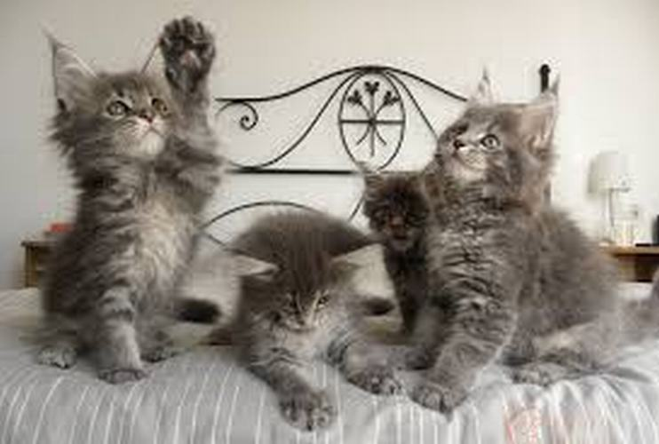

Nguồn gốc
Mèo Maine Coon hay mèo lông dài Mỹ là một trong những giống mèo to lớn cũng như cổ xưa nhất Bắc Mỹ , vì thế tên của chúng cũng được đặt theo tên một bang tại Mỹ
Mô tả
Tuy to lớn, nhưng Maine Coon lại có dáng đi uyển chuyển, đặc biệt kỹ năng săn mồi đáng nể
Chi tiết
nên từng có một thời gian chúng được nuôi để săn bắt và tiêu diệt nạn chuột gặm nhấm tại Hoa Kỳ.